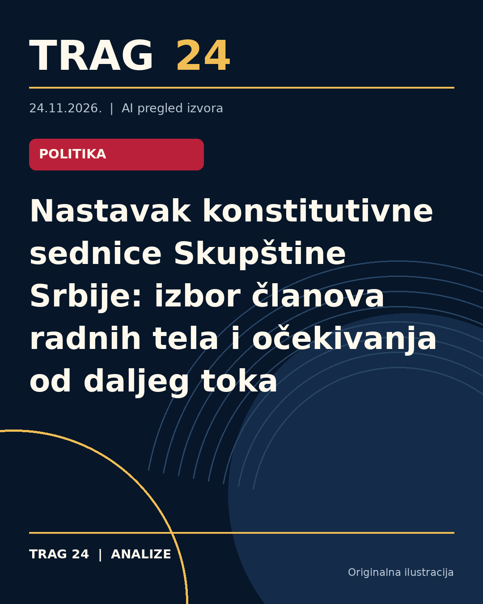

Nastavak konstitutivne sednice Skupštine Srbije: izbor članova radnih tela i očekivanja od daljeg toka

ŠTA SE DOGODILO
Konstitutivna sednica Narodne skupštine Srbije u 15. sazivu nastavljena je 24. novembra. Fokus sednice je na izboru članova skupštinskih radnih tela i stalnog sastava parlamentarnih delegacija u međunarodnim institucijama. Prethodno je 19. novembra već izabran predsednik Skupštine Aleksandar Čupić, kao i šest potpredsednika. Na današnjem sastanku poslaničkih grupa održane su konsultacije o daljim koracima konstituisanja radnih tela.
HRONOLOGIJA
Sednica Skupštine započela je 17. novembra verifikacijom mandata svih 250 poslanika, čime je konstituisan novi saziv. U četvrtak, 19. novembra, održana je dvodnevna rasprava o izboru predsednika Skupštine, po završetku koje je Aleksandar Čupić izabran većinom glasova. Nastavak sednice zakazan je za 24. novembar u 10 časova, kada je na dnevnom redu izbor članova radnih tela i parlamentarnih delegacija.
ŠTA NAVODE IZVORI
Izveštaji navode da će Srpska napredna stranka (SNS) najverovatnije bojkotovati rad u skupštinskim odborima, što je izjavilo rukovodstvo te poslaničke grupe. Predsednik Skupštine Aleksandar Čupić istakao je potrebu za dijalogom i tolerancijom kao obrascem političke kulture u radu parlamenta. Novinarka Jelka Jovanović ocenjuje da je dosadašnji tok konstitutivne sednice zadovoljavajući i očekuje da će novi predsednik Skupštine doprineti vraćanju dostojanstva parlamentu, uz strogo ali pravedno vođenje sednica i smanjenje bespotrebnih polemika. Takođe, očekuje se uključenje svih poslaničkih grupa u rad odbora u skladu sa izbornim rezultatima, mada postoji kritika da Studentska lista nije dala potpredsednička mesta nacionalnim manjinama.
ŠTA JE POTVRĐENO
Potvrđeno je da je Aleksandar Čupić izabran za predsednika Skupštine Srbije, kao i da je sednica nastavljena sa izborom potpredsednika i da je planirana rasprava o izboru članova radnih tela. Održane su konsultacije poslaničkih grupa o daljem toku rada. Izbor predsednika Skupštine održan je javnim glasanje i rezultirao je većinskom podrškom Čupiću. Dato je i saopštenje da nastavak konstitutivne sednice počinje u utorak, 24. novembra, u 10 sati.
ŠTA NIJE POTVRĐENO
Nije potvrđeno kako će tačno izgledati sastavi odbora i parlamentarne delegacije, niti je poznato da li će se konačno ostvariti učešće svih poslaničkih grupa u odborima, s obzirom na najave o mogućem bojkotu SNS. Takođe, nemamo potvrdu o dinamici ili detaljima budućih plenarnih zasedanja osim datuma i osnovnih planova. Nema potvrde o reakcijama ili promenama unutar političkih grupacija nakon konsultacija.
ŠTA OSTАJE OTVORENO: Ostaje otvoreno pitanje daljeg odnosa između vladajuće stranke i opozicije u parlamentu, budući da je najavljeno da će SNS verovatno bojkotovati rad odbora, što može uticati na efikasnost parlamentarnog rada. Takođe je neizvesno da li će poslanici svih poslaničkih grupa u potpunosti prihvatiti pravila i procedure kako bi rad skupštine tekao mirnije i dostojanstvenije, kako je istaknuto u očekivanjima. Ostaće da se prati da li će planirane promene Poslovnika o radu Skupštine i dalji predsednički pristup i dalje doprinositi smirivanju političkih tenzija u parlamentu.
Izvori
- https://www.b92.net/info/politika/287533/danas-nastavak-konstitutivne-sednice-skupstine-srbije-odrzane-konsultacije-istice-rok-za-izjasnjavanje/vest
- https://tvjasenica.rs/u-utorak-nastavak-konstitutivne-sednice-skupstine-srbije/
- https://www.masina.rs/nastavak-sednice-skupstine-sutra-u-10-casova-sta-sledi-i-sta-ocekivati/
Ova analiza je pripremljena uz pomoć veštačke inteligencije na osnovu javno dostupnih izvora. Navodi izvora nisu nužno nezavisno potvrđeni.